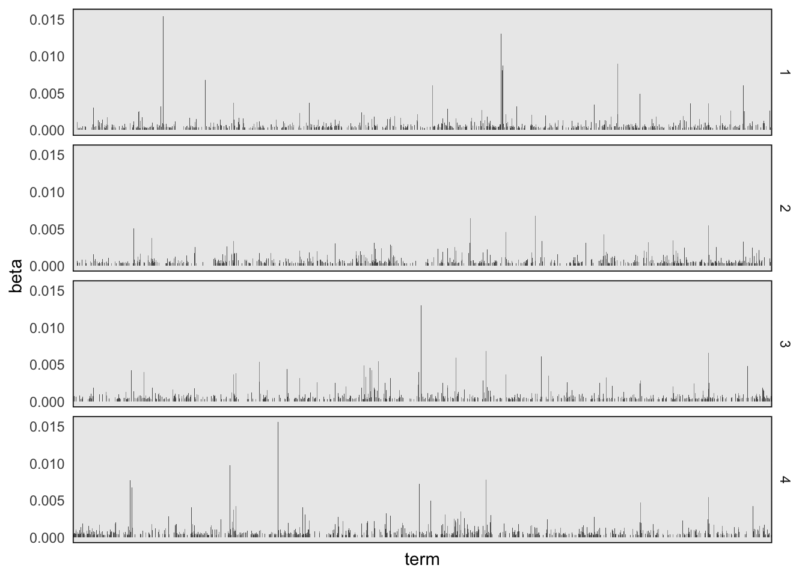
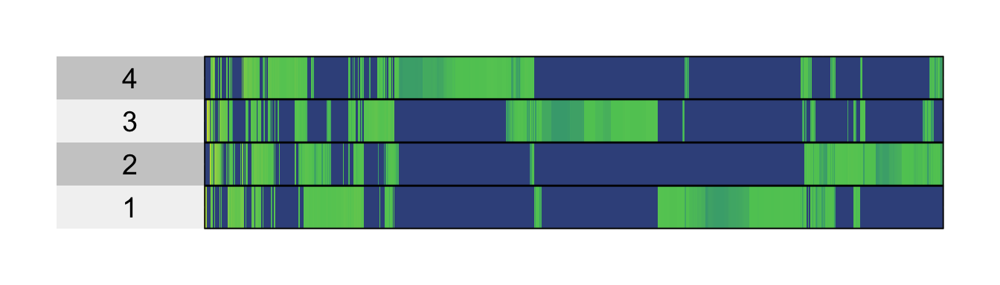
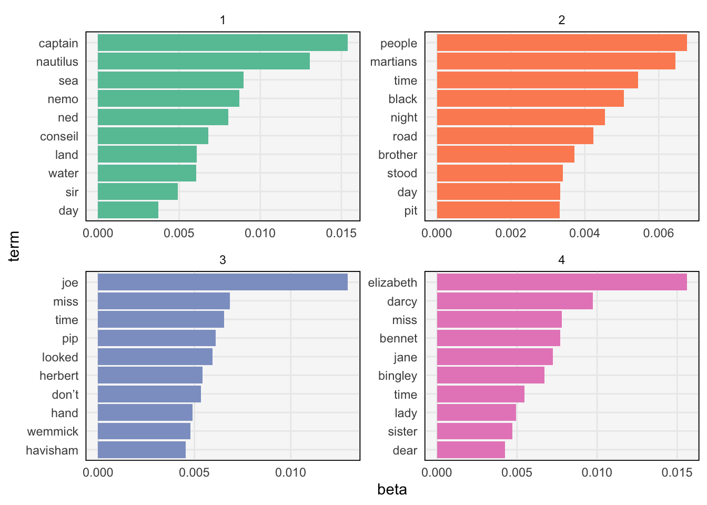
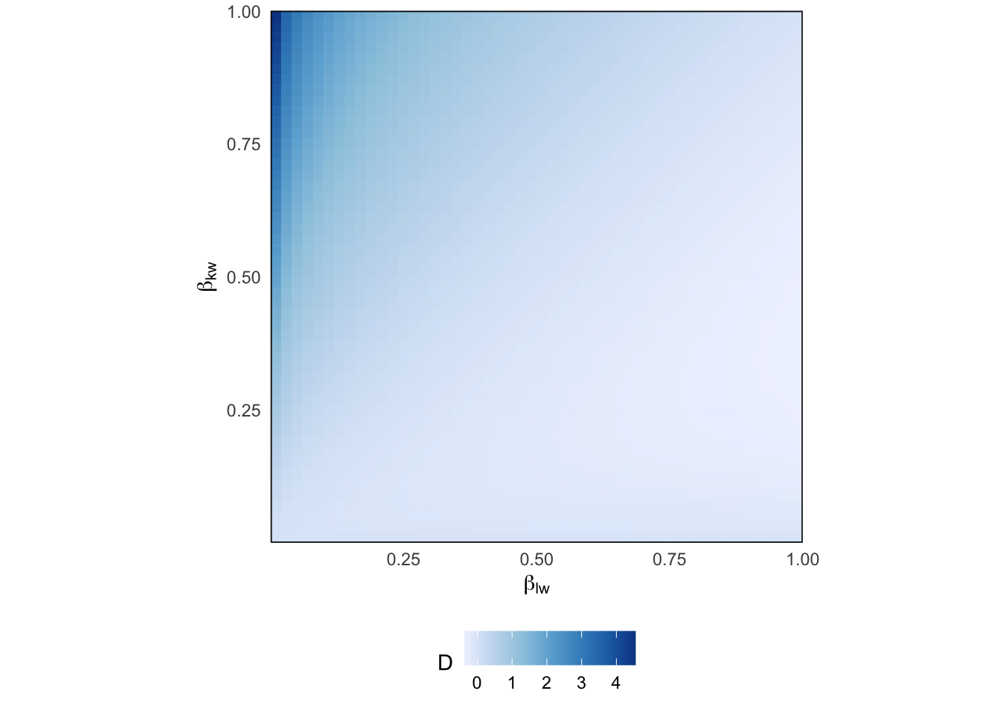
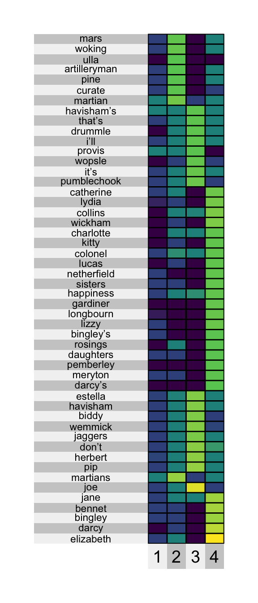
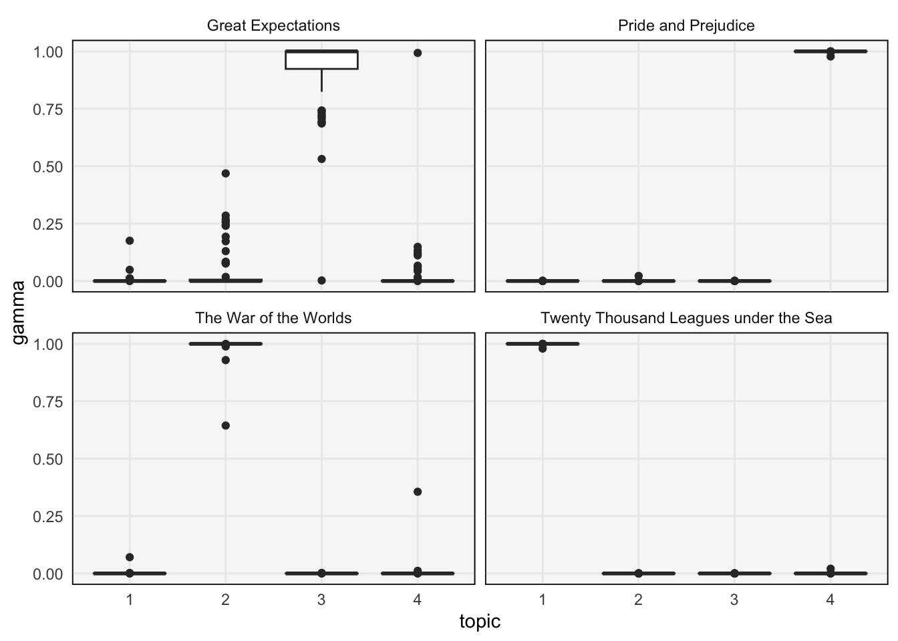
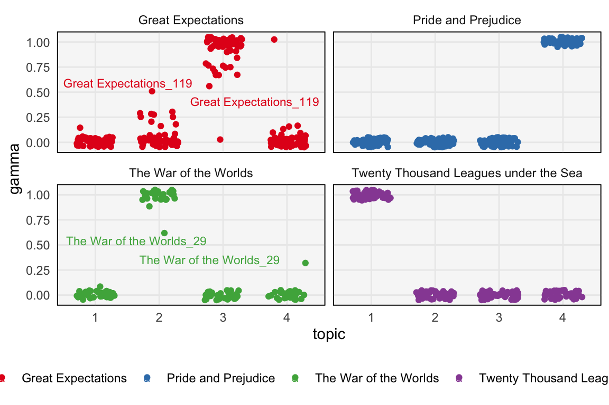
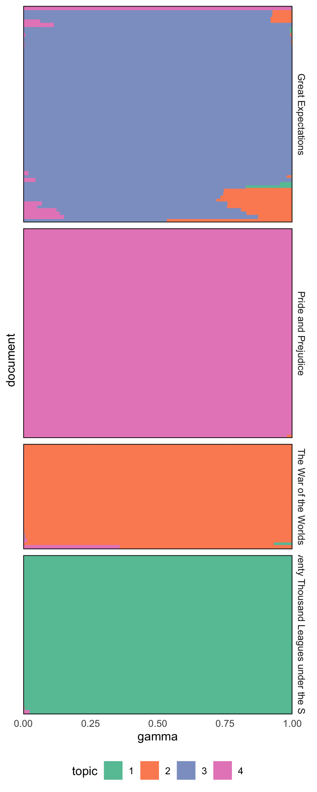

library(tidyverse)
library(ggrepel)
library(superheat)
library(tidytext)
library(topicmodels)
theme479 <- theme_minimal() +
theme(
panel.grid.minor = element_blank(),
panel.background = element_rect(fill = "#f7f7f7"),
panel.border = element_rect(fill = NA, color = "#0c0c0c", size = 0.6),
legend.position = "bottom"
)
theme_set(theme479)Visualizing Topic Models
Once we’ve fit a topic model, how should we inspect it?
Reading 1 and 2, Recording, Rmarkdown
- In the last set of notes, we fit a topic model to the “Great Library Heist” dataset, but we did not visualize or interpret the results. We’ll work on that here. The code below reads in the tidy topic and membership data.frames from before.
memberships <- read_csv("https://uwmadison.box.com/shared/static/c5k5iinwo9au44fb3lc00vq6isbi72c5.csv")
topics <- read_csv("https://uwmadison.box.com/shared/static/uh34hhc1wnp072zcryisvgr3z0yh25ad.csv")Visualizing Topics
- A topic is a probability distribution across a collection of words. If the vocabulary isn’t too large, two appropriate visualization strategies are,
- Faceted barplot: Each facet corresponds to a topic. The height of each bar corresponds to a given word’s probability within the topic. The sum of heights across all bars is 1.
- Heatmap: Each row is a topic and each column is a word. The color of the heatmap cells gives the probability of the word within the given topic.
- We can construct a faceted barplot using the tidied beta matrix. We’ve filtered to only words with a probability of at least \(0.0003\) in at least one topic, but there are still more words than we could begin to inspect. Nonetheless, it seems that there are words that have relatively high probability in one topic, but not others.
ggplot(topics %>% filter(beta > 3e-4), aes(term, beta)) +
geom_col() +
facet_grid(topic ~ .) +
theme(axis.text.x = element_blank())
- For the heatmap, we need to pivot the topics, so that words appear along columns. From there, we can use superheatmap. The advantage of the heatmap is that it takes up less space, and while it obscures comparisons between word probabilities1 the main differences of interest are between low and high probability words.
topics %>%
filter(beta > 3e-4) %>%
pivot_wider(names_from = "term", values_from = "beta", values_fill = 0) %>%
select(-1) %>%
superheat(
pretty.order.cols = TRUE,
legend = FALSE
)
- Neither approach is very satisfactory since there are too many words for us to effectively label. A workaround is to restrict attention to a subset of “interesting” words. For example, we could filter to,
- Top words overall: We can consider only words whose probabilities are above some threshold. This is the approach used in the visualizations above, though the threshold is very low (there are still too many words to add labels).
- Top words per topic: We can sort the words within each topic in order from highest to lowest probability, and then keep only the \(S\) largest.
- Most discriminative words: Some words have high probability just because they are common. They have high probability within each topic but aren’t actually interesting as far as characterizing the topics is concerned. Instead, we can focus on words that are common in some topics but rare in others.
- We can obtain the most probable words using the
slice_maxfunction, after first grouping by topic. Then, we use the samereorder_withinfunction from the PCA lectures to reorder words within each topic. The resulting plot is much more interpretable. Judging from the words that are common in each topic’s distribution, we can guess that the topics approximately correspond to: 1 -> Great Expectations, 2 -> 20,000 Leagues Under the Sea, 3 -> Pride & Prejudice, 4 -> War of the Worlds.
top_terms <- topics %>%
group_by(topic) %>%
slice_max(beta, n = 10) %>%
mutate(term = reorder_within(term, beta, topic))
ggplot(top_terms, aes(beta, term, fill = factor(topic))) +
geom_col(show.legend = FALSE) +
facet_wrap(~ topic, scales = "free") +
scale_fill_brewer(palette = "Set2") +
scale_y_reordered()
- To visualize discriminative words, we first compute a discrimination measure for each word and filter to those with the top score. The filtered results can be used in either faceted barplots or heatmaps. Specifically, to find the words that discriminate between topics \(k\) and \(l\), we compute \[\begin{align*} D\left(k, l\right) := \beta_{kw}\log\left(\frac{\beta_{kw}}{\beta_{lw}}\right) + \left(\beta_{lw} - \beta_{kw}\right) \end{align*}\] for each word \(w\). By maximizing over all pairs \(k, l\), we can determine whether the word is discriminative between any pair of topics. This might seem like a mysterious formula, but it is just a function that is large when topic \(k\) has much larger probability than topic \(l\) (see the figure).
p <- seq(0.01, .99, length.out = 50)
df <- expand.grid(p, p) %>%
mutate(D = kl_div(Var1, Var2))
ggplot(df, aes(Var2, Var1)) +
geom_tile(aes(col = D, fill = D)) +
scale_x_continuous(expand = c(0, 0)) +
scale_y_continuous(expand = c(0, 0)) +
coord_fixed() +
scale_color_distiller(direction = 1) +
scale_fill_distiller(direction = 1) +
labs(
y = expression(beta[kw]),
x = expression(beta[lw])
)
- An example heatmap of discriminative words is shown below. This backs up our interpretation from the figure above. It also has the advantage that it removes common words (e.g., hand, people, and time appeared in the plot above) and highlights rarer words that are specific to individual topics (e.g., names of characters that appear in only one of the books).
discriminative_terms <- topics %>%
group_by(term) %>%
mutate(D = discrepancy(beta)) %>%
ungroup() %>%
slice_max(D, n = 200) %>%
mutate(term = fct_reorder(term, -D))
discriminative_terms %>%
pivot_wider(names_from = "topic", values_from = "beta") %>%
column_to_rownames("term") %>%
select(-D) %>%
superheat(
pretty.order.rows = TRUE,
left.label.size = 1.5,
left.label.text.size = 3,
bottom.label.size = 0.05,
legend = FALSE
)
Visualizing Memberships
- Besides the topics, it is useful to study the topic proportions for each chapter. One compact approach is to use a boxplot. The result below suggest that each chapter is very definitely assigned to one of the four topics, except for chapters from Great Expectations. Therefore, while the model had the flexibility to learn more complex mixtures, it decided that a clustering structure made the most sense for Pride & Prejudice, War of the Worlds, and 20,000 Leagues Under the Sea.
memberships <- memberships %>%
mutate(
book = str_extract(document, "[^_]+"),
topic = factor(topic)
)
ggplot(memberships, aes(topic, gamma)) +
geom_boxplot() +
facet_wrap(~book)
- The boxplot considers the collection of documents in aggregate. If we want to avoid aggregation and visualize individual documents, we can use a heatmap or jittered scatterplot. These approaches are useful because heatmap cells and individual points can be drawn relatively small — anything requiring more space would become unwieldy as the number of documents grows. For example, the plot below shows that chapter 119 of Great Expectations has unusually high membership in Topic 2 and low membership in topic 3.
ggplot(memberships, aes(topic, gamma, col = book)) +
geom_point(position = position_jitter(h = 0.05, w = 0.3)) +
geom_text_repel(aes(label = document), size = 3) +
facet_wrap(~ book) +
scale_color_brewer(palette = "Set1")
- Alternatively, we can use a “structure” plot. This is a type of stacked barplot where the colors of each bar corresponds to a topic. We’ve sorted the documents using the result of a hierarchical clustering on their proportion vectors – this is like how superheatmap orders rows using a dendrogram when using
pretty.order.rows. The takeaways here are similar to those in the scatterplot above.
gamma <- memberships %>%
pivot_wider(names_from = topic, values_from = gamma)hclust_result <- hclust(dist(gamma[, 3:6]))
document_order <- gamma$document[hclust_result$order]
memberships <- memberships %>%
mutate(document = factor(document, levels = document_order))
ggplot(memberships, aes(gamma, document, fill = topic, col = topic)) +
geom_col(position = position_stack()) +
facet_grid(book ~ ., scales = "free", space = "free") +
scale_x_continuous(expand = c(0, 0)) +
scale_fill_brewer(palette = "Set2") +
scale_color_brewer(palette = "Set2") +
theme(axis.text.y = element_blank())
Footnotes
Color is in general harder to compare than bar height.↩︎